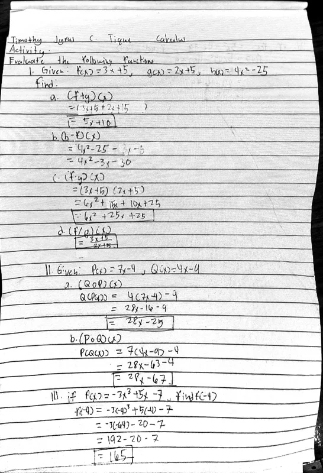
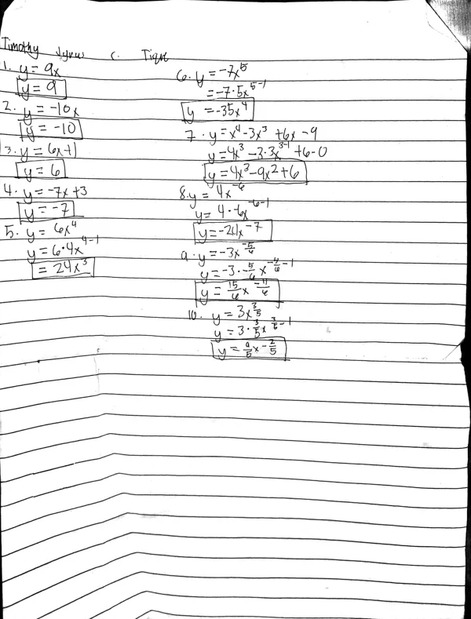
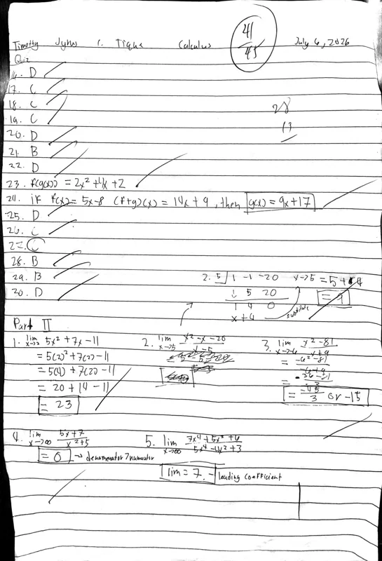
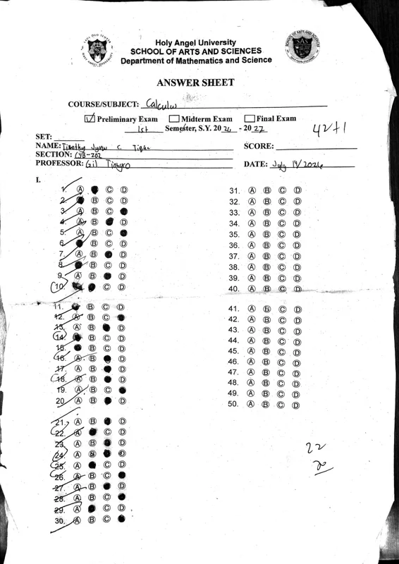
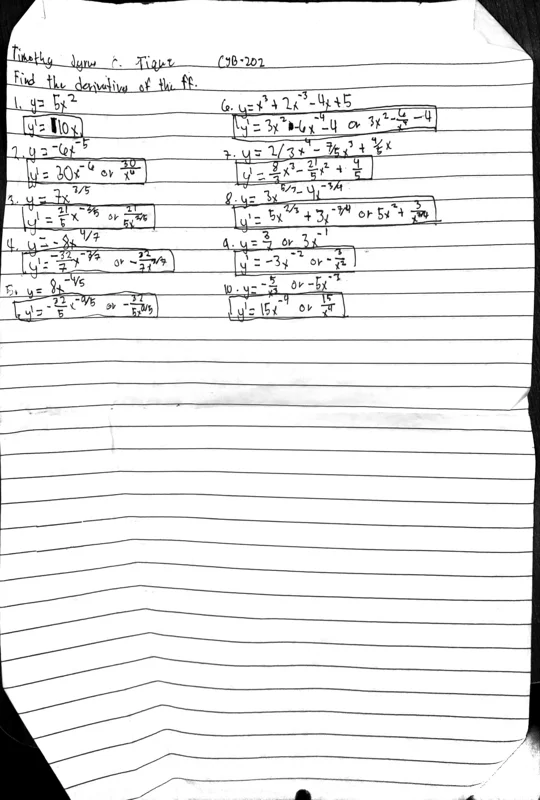
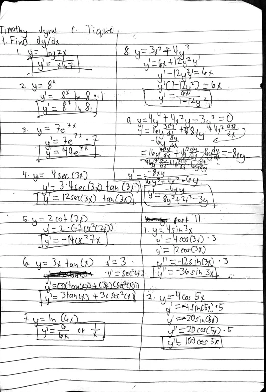
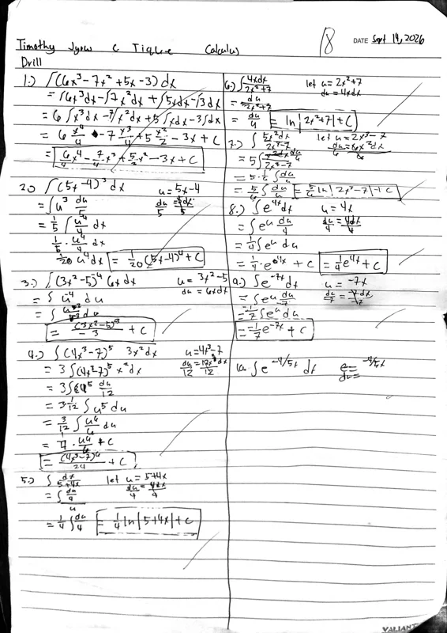
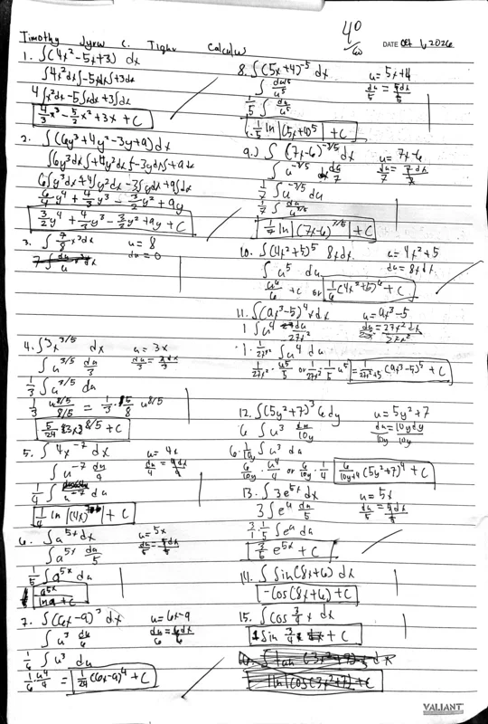

Timothy Jyrus Tique · CYB-202 · IT Calculus
A collection of work
and things learned
A few pages
from my semester.
Swipe through my work, then open a page for the full photo and reflection.
in ↗
A semester of working things out, from the first function to the final integral.
June – October 2026Hi, I’m Timothy.
I’m a student from CYB-202 at Holy Angel University, and this is my IT Calculus portfolio. It brings together the work I completed throughout prelims, midterms, and finals.
From operations on functions to trigonometric integration, these pages follow the topics I worked through during the semester. Alongside each activity, I’ve included a short reflection on the ideas and steps worth remembering.
Take a look through my handwritten solutions, quizzes, and infographic to see the work behind this collection.
The coursework
Eleven activities. Three chapters of learning.
Open a page to see the work and the reflection behind it.
From functions to integrals, one page at a time.
11 activities

Operations on Functions
View activity & reflection

About this work
Operations on Functions, completed on June 29, 2026, is the first activity of my IT Calculus course. In it I evaluated the sum, difference, product, quotient and composition of given functions. It matters because every later topic, from limits to integrals, depends on handling functions correctly, so this page is the starting line of my portfolio. By Timothy Jyrus Tique.
Reflection
This activity shows that I can combine and compose functions and state the domain of each result. At the start of the semester I treated it as plain algebra and rushed, which is how sign errors crept in. Working through each part step by step, and checking which x-values were allowed, is where I began building the careful habits the rest of the course depends on. Finishing it gave me a solid base for limits and derivatives.
Short-term goal: Write out every substitution when composing functions, and always state the domain.
Long-term goal: Make my function algebra fast and accurate enough that it never slows me down in later math or programming courses.
Looking back
Looking at it now, my work is correct but cramped. Some steps are squeezed together, and I did not always write the domain next to each result, which makes the solution harder to follow and check.
What I’d do differently: If I redid it, I would give each part its own space, write the combined function before simplifying, and add a one-line domain statement under every answer.
Open full photo
Introduction to Derivatives
View activity & reflection

About this work
Introduction to Derivatives, completed on July 2, 2026, is a set of power-rule exercises with positive, negative and fractional exponents. It matters because it is my first real step into differential calculus, the point where the course moved from describing functions to measuring how they change. By Timothy Jyrus Tique.
Reflection
This activity shows I can apply the power rule to any exponent. At first the negative and fractional cases tripped me up, because subtracting one from them felt unnatural. By the end of the set I was rewriting roots and fractions as powers before differentiating, so every problem followed the same pattern. This is where differentiation stopped being a rule I memorized and became something I understood.
Short-term goal: Rewrite every root and fraction as a power before I differentiate.
Long-term goal: Understand derivatives as rates of change well enough to use them in real problems, not just exercises.
Looking back
My answers follow the rule, but I often jumped straight to the final form without showing how I rewrote roots and fractions as powers. Anyone checking my work cannot see where a mistake might have happened.
What I’d do differently: A better approach is to add a 'rewrite' line before every derivative and box the final answer, so each step can be checked on its own.
Open full photo
Prelim Quiz
View activity & reflection

About this work
The Prelim Quiz, taken on July 6, 2026, tested the early topics together in one timed sitting. It matters as the first measure of how well I could apply what I had learned without guidance, and it showed me exactly which study habits needed work. By Timothy Jyrus Tique.
Reflection
This quiz shows I can switch between topics and recognize which method each problem needs. Looking back, my slip-ups came less from not knowing the rules and more from skipping steps to save time. Seeing that pattern was an accomplishment in itself: my weak spot is carelessness, not understanding, and writing out the in-between work is worth the extra minute.
Short-term goal: Show the intermediate steps on every problem, even the easy ones.
Long-term goal: Build exam habits (pacing, checking and showing my work) that hold up under time pressure in every course.
Looking back
Some of my answers have little or no supporting work, so even the correct ones would be hard to defend, and the errors I did make are hard to trace back to their cause.
What I’d do differently: Next time I would budget my time per question, write at least one supporting line for every answer, and save the last few minutes to recheck the questions I rushed.
Open full photoCalculus Infographics
View activity & reflection
About this work
Calculus Infographics, completed on July 13, 2026, is a visual poster showing how functions and limits are applied in health, engineering, technology and economics. It matters because it is the one piece in my portfolio that explains calculus to an audience instead of solving problems, and it links the course to real-world fields, including my own. By Timothy Jyrus Tique.
Reflection
Making this infographic pushed me beyond solving problems to explaining ideas. It shows I can research how calculus is used, connect it to real situations and communicate it visually, which is a different skill from computing answers. It is also where calculus first felt relevant to my field, since so much of computing is about modelling change.
Short-term goal: Explain each new topic in my own words, the way I did in this infographic.
Long-term goal: Use calculus to model and explain real systems in my IT and cybersecurity work.
Looking back
The design is eye-catching, but some sections carry a lot of small text, which makes the page dense and hard to read at a glance. A few applications are described in general terms rather than shown with an actual function or limit.
What I’d do differently: To improve it, I would cut each section down to one short sentence and add one concrete formula per field, such as a growth function in medicine, so the math is visible and not just mentioned.
Open full photo
Prelims Exam
View activity & reflection

About this work
The Prelims Exam, taken on July 14, 2026, closed the first term and covered functions, limits and the beginnings of differentiation. It matters as the formal checkpoint of my foundations: it showed what I had truly understood and what I had only memorized. By Timothy Jyrus Tique.
Reflection
Completing this exam shows I can work through the foundations of calculus without notes and under time pressure. Some parts went smoothly; others made me second-guess myself. Reviewing it afterwards, I focused on why each answer works rather than only whether it was right, and that changed how I studied for the rest of the semester.
Short-term goal: Review every exam by redoing the questions I hesitated on, not just the ones I got wrong.
Long-term goal: Study for understanding, so I can explain why a method works instead of only repeating it.
Looking back
My hesitation shows on the page in changed answers and corrections on questions I should have been sure of. That tells me parts of my preparation were rote practice rather than real understanding.
What I’d do differently: A more effective way to prepare would be to explain each topic out loud or to a classmate before the exam, and to practise mixed problem sets instead of one topic at a time.
Open full photo
Basic Differentiation Formulas
View activity & reflection

About this work
Basic Differentiation Formulas, completed on July 30, 2026, opens the midterm term with practice on the sum, product, quotient and constant rules. It matters because these formulas are the toolkit for every derivative that follows, and this activity is where I learned to choose between them quickly. By Timothy Jyrus Tique.
Reflection
This activity shows I can pick the right rule for each term and apply it accurately. Compared with the start of midterms, I work faster now because I break an expression into terms and handle one at a time, keeping coefficients and exponents lined up so my work is easy to check. That organization is a clear improvement over my earlier, messier solutions.
Short-term goal: Decide which rule fits each term before writing anything, then check one term at a time.
Long-term goal: Make differentiation automatic, so I can focus on the problem it is being used to solve.
Looking back
My solutions are accurate, but on longer expressions I sometimes simplified too early and ended up with crowded lines that are hard to check. In places, the rule I used is not obvious from the work.
What I’d do differently: I would label the rule above each step (for example, 'product rule'), finish differentiating first, and only simplify once everything is written out.
Open full photoThe Chain Rule
View activity & reflection
About this work
The Chain Rule, completed on July 31, 2026, focuses on differentiating composite functions. It matters because the chain rule underlies nearly every advanced derivative technique, and this activity marks when I started seeing functions as layers instead of single expressions. By Timothy Jyrus Tique.
Reflection
The chain rule confused me at first because everything seemed to happen at once. This activity shows how I worked through that: splitting each function into an outer and an inner layer, differentiating the outside, then multiplying by the derivative of the inside. That last step is the one I used to forget, and by the end of the set I was catching it consistently.
Short-term goal: Label the inner and outer functions on paper before differentiating any composite function.
Long-term goal: Get comfortable with nested functions, which show up everywhere from physics formulas to code.
Looking back
In the earlier problems I did not always make clear what the inner function was, which is exactly where the chain rule goes wrong. My work relies on doing it in my head instead of showing it.
What I’d do differently: A practical fix is to write 'u = …' and 'du/dx = …' beside each problem before differentiating, so the inner function and its derivative are never skipped.
Open full photo
Implicit, Exponential & Trig
View activity & reflection

About this work
Implicit, Exponential & Trig, completed on August 20, 2026, combines three kinds of derivatives in a single activity. It matters because it is the most varied set from my midterms, testing whether I could recognize which rule a problem needs without being told. By Timothy Jyrus Tique.
Reflection
This activity shows I can identify the type of function first and then choose the right approach. Implicit differentiation took the most getting used to, especially remembering dy/dx every time I differentiated a y term. Applying the rules first and simplifying only at the end made my answers much more reliable, and finishing this set gave me confidence going into integration.
Short-term goal: Mark every y term in implicit problems so I never miss its dy/dx.
Long-term goal: Handle unfamiliar, mixed problems calmly by identifying their structure before I start.
Looking back
Implicit problems were my weakest part of this set. The step where I gather the dy/dx terms and solve for dy/dx is not always clearly shown, so the final answer can look like it appears out of nowhere.
What I’d do differently: Next time I would mark every y term before starting, collect the dy/dx terms on one side as a separate step, and verify one answer by substituting a point.
Open full photo
Integral Drills
View activity & reflection

About this work
Integral Drills, completed on September 14, 2026, starts the finals term with practice on basic antiderivatives. It matters because integration is the second half of calculus, and these drills are where I built the speed and checking habits I relied on for the rest of the term. By Timothy Jyrus Tique.
Reflection
These drills show I can recognize standard forms and integrate them directly. Integration felt like working derivatives in reverse: simple in theory, but it took practice. Two habits came out of this activity, writing + C every time and differentiating my answer to check it, and they mean I can now catch my own mistakes instead of waiting for them to be marked.
Short-term goal: Check every antiderivative by differentiating it before moving on.
Long-term goal: Use integration confidently for areas, accumulation and other applications in future courses.
Looking back
The drills are mostly answers, with few checks written down. Even though checking by differentiation is the quickest way to confirm an antiderivative, the page does not show that I did it.
What I’d do differently: I would add a one-line derivative check under each answer, and group the problems by form while practising so I learn to recognize patterns faster.
Open full photoTrigonometric Integration
View activity & reflection
About this work
Trigonometric Integration, completed on September 21, 2026, applies identities and substitution to integrals of trigonometric functions. It matters because it shows that rewriting a problem is often the key step, which is the most transferable lesson of the finals term. By Timothy Jyrus Tique.
Reflection
This activity shows I can use identities and substitution to simplify an integrand before integrating. My growth here is in planning: earlier I would start calculating and switch methods halfway through, but by this point I was taking a moment to choose an identity first. That shift from rushing to planning is probably my most important improvement this semester.
Short-term goal: Keep a list of the key trig identities and choose one before starting each integral.
Long-term goal: Approach any complex problem, in math or in programming, by planning my method before diving in.
Looking back
On a few problems the work does not show which identity I chose or why, so a reader has to reverse-engineer my reasoning. When a first attempt did not work, the restart makes the page harder to follow.
What I’d do differently: A better approach is to write the identity or substitution I plan to use at the top of each problem before calculating, and to keep an identity sheet on hand while practising.
Open full photo
Finals Quiz
View activity & reflection

About this work
The Finals Quiz, taken on October 1, 2026, is the last activity in my portfolio and brings all the integration techniques together. It matters because it closes the semester and shows how my work changed from the first activity on June 29 to the end of the course. By Timothy Jyrus Tique.
Reflection
This quiz shows I can look at an integrand, decide on a method, carry it out and check the result. Compared with my prelim work, my solutions are more organized and I make fewer careless errors, because checking has become a habit. Completing it was a fitting end to the semester and proof that steady practice paid off.
Short-term goal: Leave time at the end of every test to verify my answers by differentiating them.
Long-term goal: Keep building on calculus in later subjects, along with the habits of planning, showing my work and checking it that I built this semester.
Looking back
My work is cleaner than in prelims, but under time pressure some steps are still compressed, and the checks I did are not always written down.
What I’d do differently: For future exams I would reserve the last five minutes only for checking, and practise timed sets beforehand so that showing every step feels natural even when I am rushed.
Open full photo